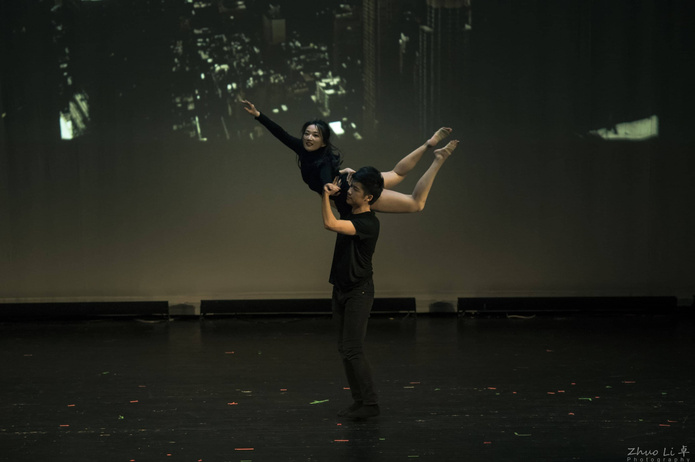
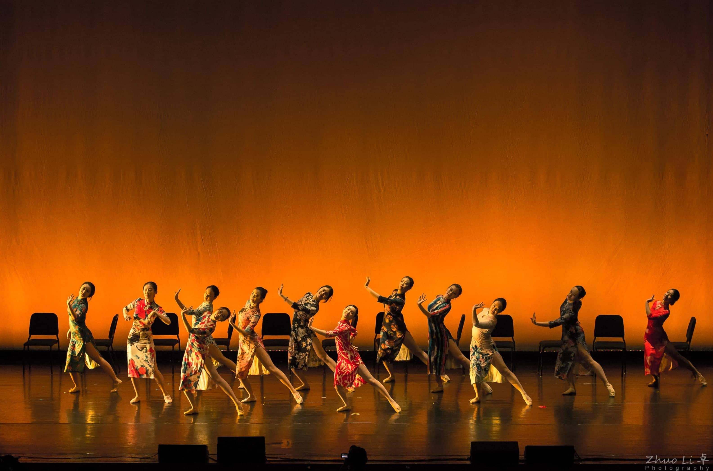
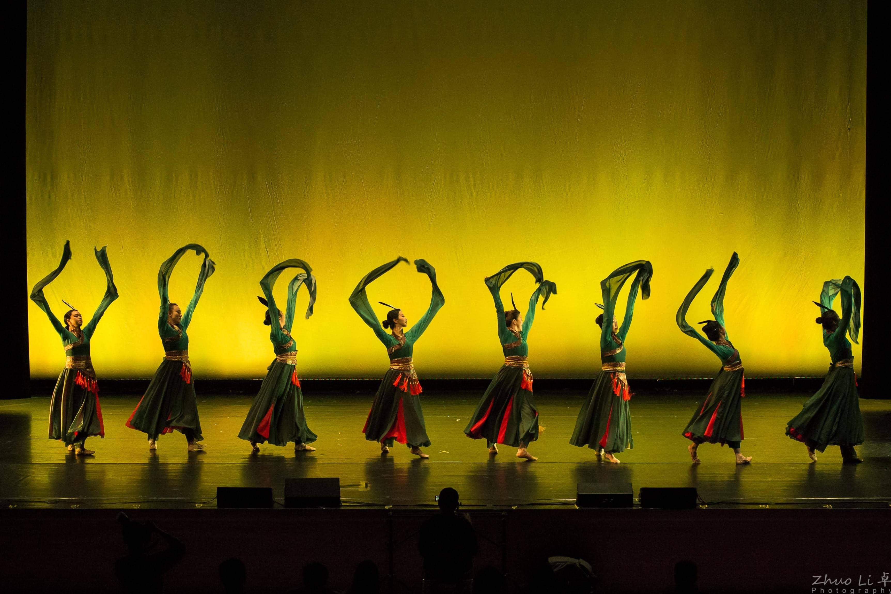
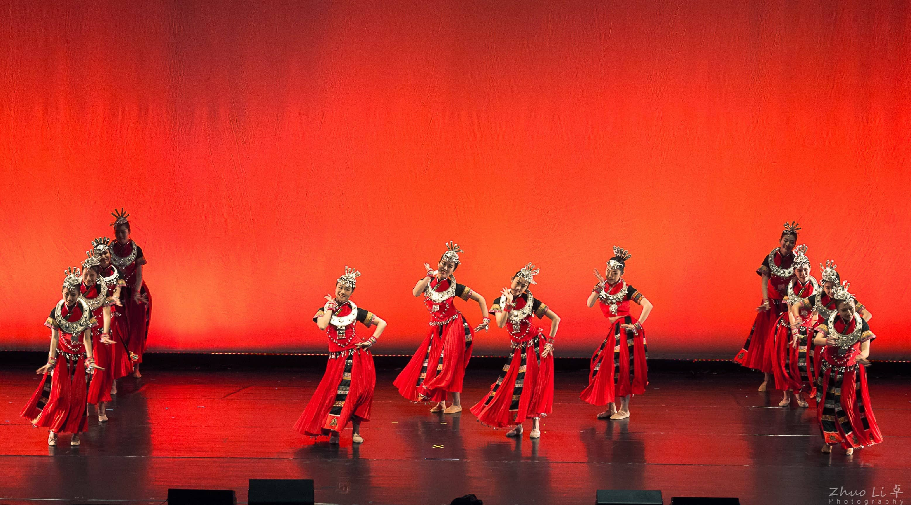

Welcome to Columbia China Dance!
欢迎参访哥大舞韵！
-

-

- 
- 
- 
- 
Columbia China Dance seeks to spread awareness of and share the beauty of Chinese culture with the Columbia community and greater NYC area through the performance and outreach of authentic Chinese classical and folk dances.
舞韵旨在以表演中国古典舞和民族舞的形式将中国文化在哥大校园以及纽约地区推广。
Recent Updates
March 10, 2019
Columbia China Dance hosted its first ever showcase “Castle in the Air,”《镜花水月》, highlighting Chinese classical, folk, and contemporary style dances. Members from outside the Columbia community were invited to perform as well, including dancers from Asian Fusion Dance at NYU and Sunshine Dance. With the collaborative efforts of more than 80 performers and backstage workers, the showcase was a success, receiving extensive attention and praise from the greater NYC community. Columbia China Dance was also honored to have famous Chinese dancer, Lijun Zhou (周丽君), teach members her signature dance, Duex Belle (尤物). Following the performance, board members and Ms. Zhou was interviewed by many media and was featured twice by People’s Daily Online.
People’s Daily Online (人民网):
Interview by 势Wave at Columbia
Columbia China Dance hosted its first ever showcase “Castle in the Air,”《镜花水月》, highlighting Chinese classical, folk, and contemporary style dances. Members from outside the Columbia community were invited to perform as well, including dancers from Asian Fusion Dance at NYU and Sunshine Dance. With the collaborative efforts of more than 80 performers and backstage workers, the showcase was a success, receiving extensive attention and praise from the greater NYC community. Columbia China Dance was also honored to have famous Chinese dancer, Lijun Zhou (周丽君), teach members her signature dance, Duex Belle (尤物). Following the performance, board members and Ms. Zhou was interviewed by many media and was featured twice by People’s Daily Online.
People’s Daily Online (人民网):
Interview by 势Wave at Columbia